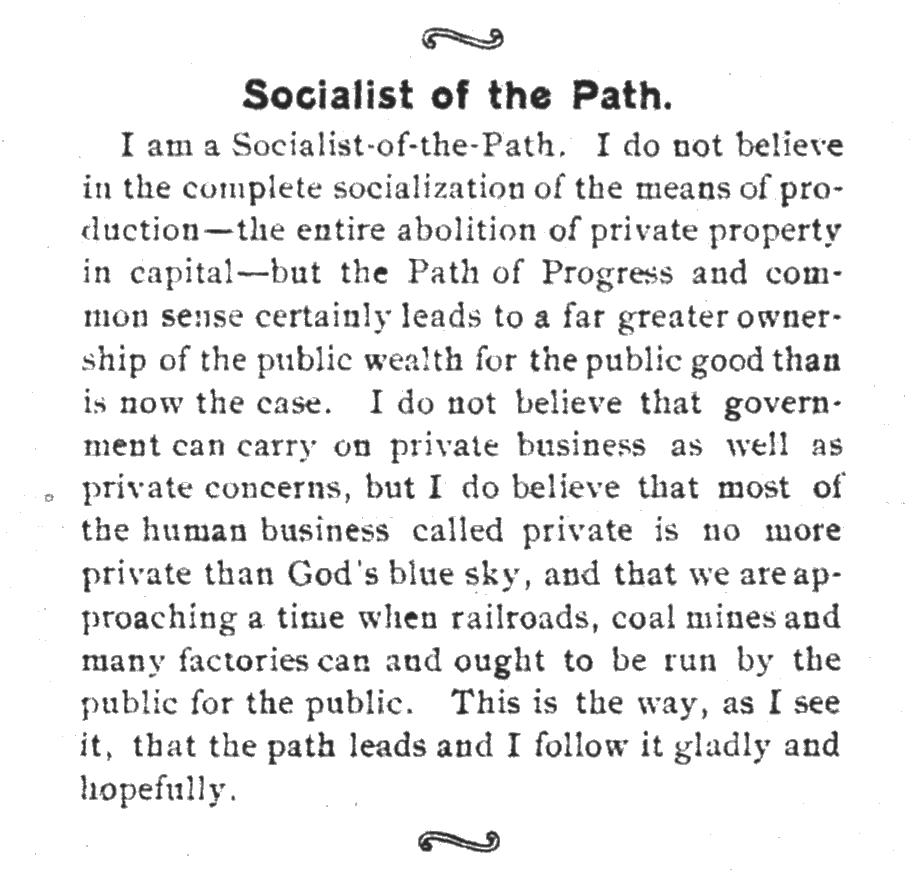

Voice of a Movement
Du Bois’s tenure as founding editor of The Crisis magazine from 1910 to 1934 stands as a pivotal chapter in the history of African American journalism and the broader civil rights movement. Under Du Bois, The Crisis became a powerful platform for civil rights advocacy, reaching a peak circulation of over 100,000 during widespread racial oppression. The magazine’s success was a testament to Du Bois’s ability to blend intellectual rigor with accessible prose, poetry, and photographs, making complex social and political issues comprehensible to a diverse readership.
This collection of articles from Du Bois’s editorial tenure provides invaluable insights into the evolution of African American thought and the strategies employed in the fight for civil rights during the early 20th century. It serves as a crucial resource for understanding the foundations of the modern civil rights movement and the enduring legacy of W.E.B. Du Bois as a scholar, activist, and visionary.
The Moon and Horizon (1900—1910)
Before founding The Crisis in 1910, W.E.B. Du Bois launched two lesser-known but significant journalistic ventures that shaped his approach to Black media. These publications, The Moon Illustrated Weekly (1905-1906) and Horizon: A Journal of the Color Line (1907-1910), served as crucial precursors to The Crisis and played pivotal roles in developing Du Bois’s vision for an independent Black press.
Both The Moon and Horizon shared a commitment to promoting racial pride, challenging the status quo, and providing a platform for African American intellectual discourse. However, they each faced significant challenges, including limited readership, financial constraints, and opposition from more conservative Black publications. Despite struggling with inconsistent publication schedules and criticism for their radical stances, the lessons learned from these early efforts significantly influenced Du Bois’s later success with The Crisis (1910-present) and contributed to his enduring impact on African American journalism in the early 20th century.
These early journalistic endeavors by Du Bois emerged from within a complex and dynamic landscape of African American journalism at the turn of the 20th century. This media environment reflected the diverse perspectives and competing visions within the Black community, providing the context in which Du Bois’s publications sought to make their mark. In an era marked by racial segregation and discrimination, Black-owned and operated publications played a vital role in serving the informational and cultural needs of African Americans. These publications grappled with fundamental questions about the goals and strategies of racial advancement, and their debates shaped the intellectual and political discourse of the time. Du Bois’s The Moon and Horizon entered this arena, contributing to and challenging the existing narratives within the Black press.
One of the most influential publications of this period was The Colored American Magazine, founded in 1900 as the first major African American journal of the new century. Under the editorship of Pauline Hopkins from 1900 to 1904, the magazine aimed to cultivate a national Black readership and promote racial pride and unity. Hopkins used the platform to explore Black history, critique the exclusion of African American experiences from mainstream textbooks, and encourage a Black literary renaissance. The magazine’s coverage of politics, business, education, and religion, alongside its inclusion of historical materials and fiction, set a significant precedent for later publications.
However, the Black press of this era was divided by ideological differences, particularly between supporters of Booker T. Washington’s accommodationist philosophy and those who advocated for more direct challenges to racial injustice. Washington exerted considerable influence over several publications, often using them to promote his views on economic development as the primary means of racial progress. This influence was not always transparent, as in the case of The Colored American Magazine, which Washington secretly subsidized after Hopkins’ departure in 1904.
In contrast, more radical voices found expression in publications like The Voice of the Negro, launched in Atlanta in 1904 as the first Black-edited journal in the South. Under the editorship of J. Max Barber, The Voice of the Negro became a platform for more confrontational expressions of racial politics, featuring articles by Du Bois that critiqued Washington’s approach. The magazine’s outspoken nature made it a target for pressure from Washington and his supporters, foreshadowing the challenges Du Bois would face in his own journalistic endeavors.
The challenges faced by independent Black journalism in this period are illustrated by the fates of these publications. The Colored American Magazine ceased publication in 1910 after losing Washington’s support, while The Voice of the Negro, forced to relocate to Chicago after the 1906 Atlanta race riot, ended its run in 1907. These closures highlight the financial and political pressures that constrained African American publications, providing context for the significance of Du Bois’s subsequent journalistic efforts.
It was in this complex and contentious media landscape that W.E.B. Du Bois launched his own journalistic ventures, The Moon Illustrated Weekly and Horizon. These publications emerged as attempts to provide alternatives to the Washington-influenced press, offering platforms for more radical political expression and cultural exploration. Du Bois’s efforts were part of a broader struggle within the Black press to define the means and ends of racial advancement in America.
In December 1905, W.E.B. Du Bois, along with partners Edward L. Simon and Harry Pace, launched The Moon Illustrated Weekly in Memphis, Tennessee, marking a significant milestone as the first illustrated weekly magazine for African Americans. With an initial investment of $3,000, The Moon aimed to interpret what Du Bois called a “new race consciousness” to the world, reflecting the growing self-awareness and cultural pride within the Black community.
The content of The Moon was diverse and ambitious. It featured news items on Africa, reprints from other publications, biographical sketches of notable African Americans, and thought-provoking editorials. The magazine also showcased illustrations, likely drawn by Du Bois himself, and carried advertisements from Black-owned businesses in Memphis and Atlanta. A notable piece published in The Moon was a tribute to the late poet Paul Laurence Dunbar, reflecting the magazine’s commitment to celebrating African American culture and achievement.
However, The Moon faced significant challenges from its inception. Its controversial nature and radical stance limited its audience to between 250 and 500 subscribers, creating financial constraints for the expensive publication. This small readership, combined with limited resources, put immense pressure on the venture. Moreover, Du Bois’s commitments to other activities prevented him from dedicating sufficient time to editing the magazine, further complicating its operations
The reception of The Moon was mixed. While it elicited commentary and sparked discussions in the Black press, it also faced mockery from accommodationist periodicals that highlighted its financial struggles. Despite its short lifespan, ending in the summer of 1906, The Moon set an important precedent for African American illustrated journalism.
Following the demise of The Moon, Du Bois swiftly launched his next journalistic venture. In January 1907, Horizon: A Journal of the Color Line began publication in Washington, D.C., later relocating to Alexandria, Virginia. Owned and operated by Freeman Murray and Lafayette M. Hershaw, with Du Bois serving as editor, Horizon provided a more enduring platform for Du Bois’s views and those of the Niagara Movement, a civil rights organization he had co-founded in 1905 to oppose racial segregation and disenfranchisement.
Horizon represented a significant evolution in Du Bois’s journalistic approach. It featured sharper critiques and covered a wider range of topics than its predecessor. The magazine’s content was notably more memorable, with contributions from talented writers like L.M. Hershaw and F.H.M. Murray. Du Bois’s “Over-Look” section became increasingly controversial, challenging the status quo and proposing political alternatives to the dominant narratives of the time.
 Horizon’s content reflected Du Bois’s increasingly bold editorial stance. The magazine published a scathing critique of Thomas Fortune, a close associate of Booker T. Washington and editor of The New York Age, and openly criticized President Theodore Roosevelt’s positions on racial issues. Moreover, it expanded its scope beyond domestic concerns. The magazine covered global issues affecting Black people, including peonage and imperialism, reflecting Du Bois’s growing interest in international affairs and their impact on the African diaspora. Additionally, Horizon became a vehicle for Du Bois’s evolving views on socialism and labor rights, topics that would become increasingly central to his intellectual and activist work in later years.
Despite its intellectual richness, Horizon faced persistent financial difficulties. Du Bois rejected the idea of subsidies, considering them “degrading and dangerous,” which meant the magazine had to rely on its readership for support. The editors worked without salaries and often covered the annual deficit out of their own pockets. Du Bois repeatedly appealed to readers for donations and additional subscribers to keep the magazine afloat.
The experiences gained from publishing The Moon and Horizon were invaluable in shaping Du Bois’s approach to journalism and his understanding of the challenges facing independent Black publications. These ventures demonstrated the difficulty of sustaining a magazine that advocated for unpopular causes without a solid financial base or institutional support.
The financial struggles of both magazines highlighted the economic realities of the African American community at the time. Du Bois’s frustration with the lack of support from the Black community for independent publications like Horizon underscored the complex relationship between radical Black intellectuals and the broader African American population, a tension that would continue to shape his approach to activism and journalism in the years to come.
Establishing The Crisis (1910-1915)
The early 20th century marked a pivotal moment in the struggle for civil rights in the United States, with the formation of the National Association for the Advancement of Colored People (NAACP) in 1909 and the subsequent launch of its official magazine, The Crisis, in 1910. This period saw W.E.B. Du Bois transition from his academic role at Atlanta University to become a leading figure in the nascent civil rights movement, utilizing his position as editor of The Crisis to shape public opinion and challenge prevailing racial attitudes.
 The Crisis emerged from the broader context of the NAACP’s formation, which itself was a response to escalating racial tensions, exemplified by the 1908 race riots in Springfield, Illinois. This violent outbreak in Abraham Lincoln’s hometown shocked both Black and white reformers, prompting journalist William English Walling to call for a national conference to address racial issues. The resulting National Negro Conference, held in New York City on May 31 and June 1, 1909, brought together a diverse coalition of civil rights activists, both Black and white, committed to challenging racial discrimination through legal and political means. Attendees included prominent figures such as Ida B. Wells-Barnett, William Monroe Trotter, and W.E.B. Du Bois, alongside white philanthropists and social reformers. This interracial composition distinguished the NAACP from earlier civil rights organizations and set the stage for a more assertive approach to activism. The conference led to the formal establishment of the NAACP in 1909, with the organization promising to vigorously oppose racial hatred and prejudice.
The Crisis emerged from the broader context of the NAACP’s formation, which itself was a response to escalating racial tensions, exemplified by the 1908 race riots in Springfield, Illinois. This violent outbreak in Abraham Lincoln’s hometown shocked both Black and white reformers, prompting journalist William English Walling to call for a national conference to address racial issues. The resulting National Negro Conference, held in New York City on May 31 and June 1, 1909, brought together a diverse coalition of civil rights activists, both Black and white, committed to challenging racial discrimination through legal and political means. Attendees included prominent figures such as Ida B. Wells-Barnett, William Monroe Trotter, and W.E.B. Du Bois, alongside white philanthropists and social reformers. This interracial composition distinguished the NAACP from earlier civil rights organizations and set the stage for a more assertive approach to activism. The conference led to the formal establishment of the NAACP in 1909, with the organization promising to vigorously oppose racial hatred and prejudice.
W.E.B. Du Bois, already a renowned scholar and author, was recruited to join the executive committee as its only African American member and appointed as the director of Publications and Research. Du Bois, who had been influential in shaping the thoughts of many of the NAACP’s white organizers through his writings and lectures, saw the organization as an opportunity to challenge Booker T. Washington’s accommodationist approach to race relations. When offered the position of Director of Publicity and Research at the NAACP, Du Bois viewed it as a chance to guide educated African American opinion and to fight for civil rights more directly than he could in his academic position.
However, not all prominent activists found such a welcoming place within the nascent organization. Despite her considerable skills and experience in journalism and civil rights advocacy, Ida B. Wells found herself sidelined in the early days of the NAACP. Wells, who had gained international recognition for her anti-lynching campaigns and her work as editor and co-owner of the Memphis Free Speech newspaper, was not included in the original list of NAACP founders. This exclusion was particularly striking given her extensive experience in investigative journalism, her powerful writing on racial injustice, and her established network of supporters both in the United States and abroad. While the exact reasons for her omission remain disputed, with Du Bois later implying it was Wells’ choice and Wells asserting in her autobiography that she was deliberately excluded, the incident highlighted the complex dynamics of race, gender, and power within the early civil rights movement. Despite these internal tensions, Du Bois pressed forward with his plans for the NAACP’s official publication.
Du Bois’s vision for The Crisis was multifaceted. He intended the magazine to serve as a platform for recording important events affecting race relations, reviewing opinions and literature on race issues, providing a forum for articles, and advocating for equal rights regardless of color. This ambitious scope reflected Du Bois’s belief in the power of informed public opinion to drive social change.
The initial funding and support for The Crisis were uncertain. The NAACP did not have funds allocated for the publication initially, but Oswald Garrison Villard, owner of the New York Evening Post and The Nation, provided office space and provisional support. This precarious financial situation underscored the challenges faced by civil rights organizations in the early 20th century and the determination of individuals like Du Bois to persevere despite limited resources.
The first issue of The Crisis was published on November 1, 1910, with a modest circulation of 1,000 copies and a subscription price of $1 per year. Despite initial skepticism about the magazine’s potential success, The Crisis quickly gained popularity. By December 1910, Du Bois had doubled the number of pages and increased the print run to 2,500 copies. The magazine’s circulation grew rapidly, reaching 3,000 in January 1911, 4,000 in February, and 6,000 in March. By April 1912, circulation had soared to 22,500 copies.
The Crisis provided comprehensive coverage of civil rights issues, with a particular focus on lynching and racial violence. Du Bois used the magazine to expose the dangers of race prejudice and to advocate for legal and political solutions to racial inequality. However, his vision for The Crisis extended far beyond merely reporting NAACP activities, which led to tensions within the organization. While some NAACP board members wanted the magazine to function primarily as an organizational newsletter, Du Bois saw it as a powerful tool for inspiring and mobilizing the African American community. This approach was reflected in the magazine’s diverse content. The “Along the Color Line” section contained news items about Black individuals, similar to a small-town newspaper, while the “Opinion” section featured Du Bois’s commentary on important events from the perspective of various newspapers. He insisted that The Crisis needed to impart a larger vision, preparing the ground for widespread organization and civil rights activism. Du Bois argued that this broad, often provocative editorial approach was essential for building the NAACP’s presence and influence. He believed that without the magnetism and inspiration provided by The Crisis, the NAACP would struggle to achieve its larger goals. This stance often put him at odds with those who preferred a more cautious, less controversial publication.
Du Bois’s writing style and approach were central to the development of The Crisis’s distinctive editorial voice. He used the magazine to challenge Booker T. Washington’s accommodationist approach and to promote a more militant stance on civil rights. Du Bois’s editorials were often controversial and confrontational, addressing taboo subjects like interracial marriage and critiquing not just white racism but also Black institutions he saw as ineffective.
While The Crisis primarily targeted an educated Black audience, featuring articles on topics such as “Colored High Schools,” “Women’s Clubs,” and “The Colored College Athlete,” Du Bois also sought to make the magazine accessible to a broader readership. He balanced intellectual content with practical information and news relevant to African American communities of various educational backgrounds. This approach allowed The Crisis to appeal to a diverse readership, covering a wide range of topics including lynching, women’s suffrage, labor issues, and socialism.
The use of photographs and artwork in The Crisis was innovative for its time and played a crucial role in shaping the magazine’s visual identity. Du Bois recognized the power of visual representation in challenging racial stereotypes and promoting Black achievement. The magazine often featured portraits of successful African Americans, contributing to a positive image of Black culture and accomplishment. This visual strategy complemented the diverse content, further enhancing the magazine’s appeal and impact.
The Crisis also benefited from the contributions of key staff members and collaborators. Mary Maclean, a journalist for the New York Times, served as the managing editor, while Robert N. Wood, an African American printer, produced the magazine at a reduced cost. This combination of editorial expertise and practical support was crucial in establishing The Crisis as a reputable and influential publication.
The magazine’s impact on African American communities was significant. Many readers, particularly those from the growing Black middle class, regarded The Crisis reverently. It served as a source of information, inspiration, and racial pride, with families often reading it aloud and preserving issues for future reference.
In contrast, the reaction from white readers and critics to The Crisis was mixed, reflecting broader tensions within the NAACP. While some progressive whites supported the magazine’s mission, others were alarmed by its provocative content and militant stance on civil rights. The success and influence of The Crisis, though beneficial to the NAACP’s overall mission, generated significant conflicts between Du Bois and white NAACP officials, particularly Oswald Garrison Villard. As chairman of the NAACP board and an experienced newspaper owner, Villard sought to exert control over The Crisis, viewing it as subject to his authority. Du Bois, however, fiercely guarded his editorial independence, insisting that his role transcended that of a mere employee. Their clashes extended beyond editorial matters to issues of financial management and Du Bois’s allocation of time between The Crisis and other NAACP duties. The NAACP board, composed primarily of progressive white members, often found Du Bois’s content too inflammatory and worried about its potential to alienate white supporters and distract from the organization’s legal and organizational work. These conflicts intensified over time, culminating in Villard’s resignation as board chairman in 1913. Despite attempts to limit Du Bois’s autonomy, including the official incorporation of The Crisis as a separate entity from the NAACP in 1914, the board ultimately had to accommodate Du Bois’s leadership of the magazine. This was largely due to The Crisis’s crucial role in mobilizing African American support and its early financial success. This ongoing struggle reflected deeper tensions within the civil rights movement about the appropriate strategies for achieving racial equality, the balance between protest and accommodation, and the role of Black leadership within interracial organizations.
War and Its Aftermath (1916-1923)
As the United States entered World War I, The Crisis under Du Bois’s editorship became a vital platform for reporting on the experiences of African American soldiers and the broader impact of the war on the black community. The magazine provided extensive coverage of military segregation and discrimination, highlighting the paradox of African Americans fighting for democracy abroad while facing systemic racism at home. Du Bois used The Crisis to document instances of mistreatment and harassment faced by black soldiers in training camps across the country, including incidents in Georgia, Kansas, and Texas.
However, Du Bois’s wartime stance was not without controversy. In July 1918, he penned the editorial “Close Ranks,” urging African Americans to set aside their grievances and support the war effort. This position, which seemed to contradict Du Bois’s previous advocacy for immediate civil rights reforms, drew sharp criticism from many African Americans and NAACP members. The controversy was further fueled by Du Bois’s consideration of a military intelligence position, leading to accusations of a quid pro quo arrangement. Although Du Bois denied any connection between the editorial and the job offer, the incident damaged his reputation and led to increased scrutiny of The Crisis by the NAACP board.
Despite this setback, Du Bois continued to use The Crisis as a platform for investigating and reporting on the treatment of African American troops. In December 1918, he traveled to France as part of the official press delegation to the Paris Peace Conference, where he gathered information on the experiences of black soldiers. The May 1919 issue of The Crisis, which included Du Bois’s influential editorial “Returning Soldiers” and documents about the mistreatment of black troops, sold a record 106,000 copies, demonstrating the magazine’s growing influence and readership.
The aftermath of World War I brought new challenges for African Americans, as racial violence escalated across the United States. The Crisis played a crucial role in documenting and responding to the wave of racial violence known as the “Red Summer” of 1919. Du Bois used the magazine to report on the numerous race riots and lynchings that occurred during this period, providing detailed accounts and analysis of events in cities like East St. Louis, Illinois, and Houston, Texas. The Crisis’s coverage of these incidents not only informed its readers but also served as a call to action, advocating for federal anti-lynching legislation and other measures to protect African American lives and rights.
The Great Migration, a massive movement of African Americans from the rural South to urban areas in the North and West, was a defining phenomenon of early 20th-century American history. Du Bois, recognizing the importance of this movement, devoted considerable attention to covering its various aspects in the pages of The Crisis. In early 1917, Du Bois undertook a personal journey through the southern states to gather firsthand information on the migration. This investigative trip reflected his commitment to empirical research, a hallmark of his earlier academic work. By traveling to the source of the migration, Du Bois aimed to provide Crisis readers with accurate, nuanced reporting on the factors driving African Americans to leave the South and the challenges they faced in doing so Du Bois’s views on the Great Migration, as expressed in The Crisis, were complex and evolving. While he encouraged resourceful African Americans to seek better opportunities in the North, he also acknowledged the significant challenges that awaited migrants in their new urban environments.
The magazine’s reporting on the Great Migration went beyond mere demographic analysis. It explored the social, economic, and political implications of this mass movement. Articles in The Crisis examined how the influx of African Americans was changing northern cities, the reception migrants received from both white and established black communities, and the impact of the migration on labor markets and racial dynamics in both the North and South.
During this period, Du Bois also expanded The Crisis’s international focus, connecting the struggles of African Americans to global anti-colonial movements. He organized and presided over the Pan-African Congress in Paris in February 1919, which brought together delegates from 16 nations to discuss issues affecting people of African descent worldwide. The Congress passed resolutions calling for better treatment of African colonies and greater international oversight of colonial administration. Du Bois used The Crisis to report on these developments and to promote his vision of pan-Africanism, which sought to unite people of African descent globally in the fight against racism and colonialism.
However, Du Bois’s approach to advancing African American interests faced a significant challenge from Marcus Garvey and his Universal Negro Improvement Association (UNIA). Initially cautious, Du Bois observed Garvey’s movement without direct confrontation. However, as Garvey’s influence grew, Du Bois became increasingly critical. He used The Crisis to publish detailed critiques of Garvey’s Black Star Line and other UNIA ventures, highlighting the ideological divide between their approaches to racial advancement.
The conflict between Du Bois and Garvey represented a broader struggle within the African American community over strategies for racial advancement and leadership. While Du Bois advocated for integration and civil rights within the United States, Garvey promoted racial separatism and a return to Africa. This ideological divide was reflected in the pages of The Crisis, where Du Bois consistently presented his vision for racial advancement, which contrasted sharply with Garvey’s approach.
Throughout this period, The Crisis continued to grow in influence and reach. By 1919, its monthly circulation exceeded 100,000, surpassing that of other prominent publications like The New Republic and The Nation. The magazine’s success allowed Du Bois to expand its content and launch new initiatives, such as The Brownie’s Book, a children’s magazine aimed at fostering pride and knowledge among young African Americans. The Brownie’s Book was revolutionary for its time, offering positive representations of Black children and families that were sorely lacking in mainstream literature. Each issue featured a mix of stories, poems, biographies of notable African Americans, and articles on African and African American history and culture. The magazine encouraged its young readers to take pride in their heritage and to aspire to academic and professional success. Du Bois, along with co-editors Jessie Redmon Fauset and Augustus Granville Dill, ensured that the content was both entertaining and educational, often addressing complex social issues in an age-appropriate manner. Although The Brownie’s Book only ran for two years due to financial constraints, its impact was significant. It paved the way for future African American children’s literature and demonstrated Du Bois’s commitment to uplifting the entire Black community, from the youngest members to the oldest.
However, the early 1920s also brought challenges for The Crisis and Du Bois. The magazine experienced a sharp decline in subscribers, dropping from over 100,000 in August 1919 to 53,000 in April 1921. This decline led to financial difficulties and tensions between Du Bois and the NAACP board over the management of the magazine and its relationship to the organization.
The Harlem Renaissance and Beyond (1924-1928)
Under Du Bois’s leadership, The Crisis became a vital platform for nurturing and showcasing African American talent during the Harlem Renaissance. The magazine instituted literary contests and awards, most notably the Krigwa awards, which provided emerging writers and poets with opportunities for recognition and publication. These initiatives were instrumental in discovering and promoting new voices in African American literature, contributing significantly to the cultural flourishing of the period. Du Bois’s commitment to fostering black artistic expression was greatly aided by Jessie Redmon Fauset, who served as the magazine’s literary editor from 1919 to 1926. Fauset, herself a notable author of the Harlem Renaissance, played a crucial role in identifying and nurturing new talent. Her discerning editorial eye helped launch the careers of several prominent writers, including Langston Hughes, Countee Cullen, and Jean Toomer. Hughes, in particular, gained early recognition when his poem “The Negro Speaks of Rivers” was published in The Crisis in 1921, marking the beginning of his career.
The Crisis’s influence extended beyond just discovering new talent; it also provided a platform for established intellectuals and artists to reach a wider audience. Zora Neale Hurston, already gaining recognition for her anthropological work and vibrant prose, contributed several pieces to the magazine, further cementing her place in the literary world. Additionally, the sociologist and civil rights activist E. Franklin Frazier found in The Crisis a venue for his incisive analyses of racial issues, helping to establish his reputation as a leading scholar in his field.
The Crisis’s commitment to fostering black artistic expression extended beyond literature. The magazine regularly featured photographs of prosperous African American citizens and Greek letter organizations, visually reinforcing the idea of racial uplift and cultural refinement that Du Bois championed. This visual representation, combined with the literary content, helped create a comprehensive portrait of African American achievement and potential. The magazine also showcased the work of African American visual artists, providing exposure for painters and sculptors like Aaron Douglas, whose distinctive style became synonymous with the visual aesthetic of the Harlem Renaissance. Augusta Savage, the renowned sculptor, received early recognition in The Crisis, which helped propel her career and visibility in the art world.
Moreover, The Crisis served as a launching pad for future leaders in various fields. A young Thurgood Marshall, who would later become the first African American Supreme Court Justice, had his early writings published in the magazine, foreshadowing his future role in the civil rights movement. Similarly, Paul Robeson, the multitalented actor, singer, and activist, found in The Crisis a platform to express his views on art and politics, contributing to his rising prominence in both cultural and political spheres.
As the Harlem Renaissance progressed, The Crisis became a forum for intense debates about the appropriate representation of black life in art and literature. Du Bois articulated his views on this matter in his seminal essay “Criteria of Negro Art,” published in The Crisis. In this piece, he argued for art that would serve as propaganda for African American advancement, emphasizing the need for positive portrayals that could counteract negative stereotypes.
This stance, however, brought Du Bois into conflict with younger artists who sought to explore the full spectrum of black experience, including aspects that Du Bois and other older intellectuals considered unseemly or detrimental to the race’s image. The Crisis editor’s criticism of works like Claude McKay’s “Home to Harlem” for their portrayal of the seedier aspects of black urban life exemplified this generational and ideological divide.
As the 1920s progressed, The Crisis began to place increased emphasis on education and economic development within the African American community. The magazine published special annual issues dedicated to higher education, reflecting Du Bois’s longstanding belief in the importance of advanced learning for racial progress. These issues reported on developments in black colleges and universities, advocating for increased African American representation in faculty and administration positions.
Simultaneously, The Crisis amplified its coverage of African American businesses and economic initiatives. This shift mirrored Du Bois’s evolving thoughts on his “Talented Tenth” concept. While he maintained his belief in the importance of higher education, Du Bois began to criticize what he perceived as growing materialism and class distinctions among college-educated African Americans. He used the pages of The Crisis to call for a reevaluation of curricula in black colleges, emphasizing the need for vocational training and industrial planning to address the economic challenges faced by the broader African American population.
Du Bois championed the development of what he termed a “closed economic circle” within the African American community. Through The Crisis, he encouraged the Talented Tenth to invest in economic projects and establish cooperative businesses to uplift the race. However, these efforts faced challenges due to limited support from the African American middle class, who often prioritized individual advancement over collective economic strategies.
The Crisis’s shift in focus during this period reflected broader changes in Du Bois’s thinking about racial advancement. While continuing to promote cultural and artistic achievement, the magazine increasingly grappled with the economic realities facing African Americans in the late 1920s. This evolution in editorial direction set the stage for the more radical economic and political positions that Du Bois would adopt in the following decade.
Economic Crisis and Ideological Shifts (1929-1932)
The onset of the Great Depression in 1929 marked a pivotal moment for W.E.B. Du Bois and The Crisis magazine, ushering in a period of financial struggle and ideological transformation. As the economic downturn gripped the nation, The Crisis, like many publications, faced declining circulation and mounting financial pressures. By 1932, the magazine’s monthly readership had plummeted to approximately 15,000, a stark contrast to its earlier success. This decline not only threatened the magazine’s survival but also compromised Du Bois’s editorial independence as The Crisis became increasingly reliant on subsidies from the NAACP.
The financial strain experienced by The Crisis mirrored the broader economic hardships faced by African American communities across the United States. Du Bois used the magazine as a platform to document and critique the disproportionate impact of the Depression on Black Americans. Through his editorials and articles, he shed light on the exacerbated racial inequalities and the inadequacies of government responses to The Crisis. This coverage served not only to inform readers but also to galvanize support for more robust economic interventions targeting African American communities.
As the economic situation deteriorated, Du Bois began to reevaluate his understanding of capitalism and explore alternative economic models. This period saw him delve deeper into the study of Marxism, reflecting a broader trend among African American intellectuals of the time. The Crisis became a forum for discussions on socialism, communism, and other progressive economic theories. Du Bois’s growing conviction that capitalism had failed led him to advocate for increased government direction of the economy, a position that put him at odds with more conservative elements within the NAACP leadership.
Du Bois’s interest in communism and alternative economic models began to take shape well before the economic crisis of 1929. His trip to the Soviet Union in 1926 played a significant role in shaping his views. During this two-month journey, Du Bois was deeply impressed by what he perceived as a society striving for a new way of life through education and equality. He observed the Soviet emphasis on workers’ empowerment and noted the apparent lack of racial prejudice. This experience led him to declare that if what he had seen was Bolshevism, then he considered himself a Bolshevik. While he remained cautious about fully embracing communist ideology, the visit sparked a deeper interest in Marxist thought and alternative economic structures. Du Bois began to view class struggle as a dilemma comparable in magnitude to racial issues, though he continued to assert that race relations in America complicated a straightforward application of Marxist class analysis.
In 1932, The Crisis published a significant symposium titled “Negro Editors on Communism,” which explored the potential relevance of Marxist thought to the African American experience. This initiative reflected Du Bois’s commitment to engaging with radical economic ideas, even as it risked alienating some of the magazine’s more moderate readers and supporters. The symposium sparked debates among Black leaders about the most effective economic strategies for advancing racial equality in the context of the Great Depression.
Du Bois’s ideological shift extended beyond economic theory to encompass evolving views on race and segregation. As the harsh realities of the Depression highlighted the limitations of existing approaches to racial advancement, Du Bois began to reconsider his stance on racial integration. He increasingly explored concepts of Black self-sufficiency and economic separatism as potential strategies for community development and empowerment.
This exploration of separatist ideas marked a significant departure from Du Bois’s earlier emphasis on integration and provoked mixed reactions from NAACP leadership and Crisis readers alike. Some viewed his new direction as a pragmatic response to the economic crisis, while others saw it as a retreat from the organization’s core principles of racial equality and integration.
Du Bois’s shifting perspectives were reflected in his proposal to reorganize the NAACP to focus more directly on economic issues affecting the African American masses. At the association’s annual conference in May 1932, he presented a four-point program calling for decentralization, a positive economic agenda, linking global and American racial issues, and greater youth involvement. This proposal underscored Du Bois’s belief that addressing economic inequality was crucial to advancing racial justice.
However, Du Bois’s new economic focus and more radical ideological stance met with resistance from Walter White and other NAACP leaders who favored a more moderate approach. This ideological divide contributed to growing tensions between Du Bois and the NAACP board, foreshadowing the eventual end of his tenure at The Crisis.
The financial struggles of The Crisis came to a head in late 1932, with Du Bois resorting to using part of his own salary to keep the magazine afloat. The NAACP board, faced with dire financial constraints, considered suspending publication entirely. This crisis led to discussions about Du Bois’s future role, with NAACP board chair Joel Spingarn arranging for Du Bois to be offered a professorship at Atlanta University for the spring of 1933, anticipating the end of his leadership at The Crisis.
Final Struggles and Departure (1933-1934)
The twilight years of W.E.B. Du Bois’s tenure at The Crisis and the NAACP were marked by contentious ideological shifts, organizational conflicts, and ultimately, his departure from the institutions he had helped build. This period from 1933 to 1934 witnessed Du Bois grappling with new economic realities, proposing controversial solutions, and facing increasing opposition from within the civil rights movement he had long championed.
As the Great Depression deepened, Du Bois began to reevaluate his views on race relations and economic strategies for African Americans. In January 1934, he published a provocative article titled “Segregation” in The Crisis, arguing that racial segregation could potentially yield positive outcomes if it led to self-sufficiency and development within the Black community. This stance represented a significant departure from the NAACP’s longstanding opposition to all forms of segregation.
Du Bois’s evolving perspective was further evident in his proposal for new economic programs tailored to African Americans. He advocated for the creation of cooperative and collective economies within the Black community, suggesting that this approach could offer a path to economic empowerment in the face of systemic discrimination. These ideas were influenced by Du Bois’s renewed study of Marxist thought, which he believed was necessary to develop a comprehensive social and economic program for African Americans.
The reaction to Du Bois’s new positions was swift and largely negative. Many civil rights leaders and activists, including those within the NAACP, viewed his stance on segregation as a betrayal of the organization’s core principles. Critics argued that embracing segregation, even as a means to an end, would undermine decades of progress in the fight for racial equality.
Du Bois’s controversial views exacerbated existing tensions between him and the NAACP leadership, particularly Walter White. The conflict centered on issues of editorial control and content in The Crisis, as well as broader disagreements on organizational strategy and priorities. As early as 1932, Du Bois had been at odds with White and Roy Wilkins over the direction of The Crisis. Du Bois resisted attempts to bring the magazine under closer NAACP control, viewing such efforts as threats to his editorial freedom and intellectual independence. The situation deteriorated further when Du Bois used The Crisis as a platform to criticize the NAACP’s approach to civil rights and to promote his own views on segregation and economic self-reliance.
The ideological rift between Du Bois and the NAACP board widened as he pushed for a fundamental reorganization of the association. Du Bois called for greater involvement of working-class African Americans in the NAACP’s decision-making processes and advocated for a more democratic structure within the organization. These proposals were met with resistance from the board, which saw them as challenges to their authority and the established direction of the NAACP.
Personal conflicts also played a role in the deteriorating relationship. Du Bois’s critiques of Walter White and other NAACP leaders became increasingly pointed, while White and his allies worked to consolidate their power within the organization. The appointment of Roy Wilkins to the board of The Crisis Publishing Company, which Du Bois vehemently opposed, further strained relations.
The culmination of these conflicts came in May 1934 when the NAACP board voted to censor Du Bois and prohibit salaried officers from criticizing the association’s policies in The Crisis. This move was a direct response to Du Bois’s continued advocacy for his controversial views on segregation and economics. Faced with what he perceived as unacceptable constraints on his intellectual freedom, Du Bois resigned from The Crisis and the NAACP on June 26, 1934. In his resignation, he cited his refusal to accept censorship and his belief that the organization had failed to adapt to new economic realities facing African Americans.
The immediate reactions to Du Bois’s departure were mixed. While some viewed it as a necessary step to maintain the NAACP’s ideological consistency, others saw it as the loss of a powerful and influential voice in the civil rights movement. The Baltimore Afro-American newspaper, reflecting a sentiment shared by some, suggested that it was time for Du Bois to retire, indicating a generational shift in civil rights leadership.
Despite the controversy surrounding his departure, Du Bois’s long-term impact on civil rights journalism and activism through his work at The Crisis was profound and lasting. Over his 24-year tenure, he had transformed The Crisis into a powerful platform for African American intellectual discourse, cultural expression, and political advocacy. The magazine had played a crucial role in shaping public opinion, nurturing Black literary talent during the Harlem Renaissance, and providing a forum for debates on strategies for advancing civil rights.
Du Bois’s emphasis on economic issues and his willingness to challenge orthodox thinking, even when it led to his ouster, helped broaden the scope of civil rights activism. His departure from the NAACP marked a shift in the organization’s approach under Walter White’s leadership, with a renewed focus on legal strategies and integration. In the years following Du Bois’s resignation, the NAACP grappled with the issues he had raised, forming a committee to reassess its program and address the economic challenges facing Black Americans during the Great Depression. While not all of Du Bois’s ideas were adopted, his influence continued to be felt in ongoing debates within the civil rights movement about the best strategies for achieving racial equality and economic justice.
W.E.B. Du Bois’s departure from The Crisis in 1934 marked the end of an era, but the impact of his quarter-century at the helm of this influential publication reverberates to this day. Through the articles collected in this site, we have traced the evolution of Du Bois’s thought, from his early advocacy for civil rights and integration to his later exploration of economic separatism and critique of capitalism.
Du Bois’s tenure at The Crisis was characterized by an unwavering commitment to intellectual rigor, a willingness to challenge orthodoxies—including his own—and a deep-seated belief in the power of the written word to effect social change. His editorial vision expanded the boundaries of civil rights discourse, interweaving issues of race with questions of class, gender, and global politics.
The legacy of Du Bois’s work at The Crisis extends far beyond the pages of the magazine. His journalistic endeavors laid the groundwork for future generations of African American writers and activists, demonstrating the crucial role of an independent Black press in articulating and advancing the cause of racial justice. Moreover, the issues Du Bois grappled with in these pages, economic inequality, political representation, cultural identity, and the global dimensions of racial oppression, remain strikingly relevant in our contemporary context. His sophisticated analyses and sometimes controversial positions continue to provoke thought and debate, challenging us to reconsider our approaches to persistent social problems.
In revisiting these articles, we gain not only a deeper understanding of a critical period in African American history but also valuable insights into the ongoing struggle for equality and justice. Du Bois’s legacy, as reflected in these pages, continues to inspire and challenge us, urging us to confront the complexities of race and power with the same intellectual rigor and moral conviction that he brought to the pages of The Crisis.
Resources
Alexander, Shawn Leigh. 2014. “The Crisis: A Record of the Darker Races: An Introduction.” In Protest and Propaganda: W. E. B. Du Bois, The Crisis, and American History, edited by A. H. Kirschke and P. L. Sinitiere. Columbia: University of Missouri Press.
Du Bois, W.E.B. 1940. Dusk of Dawn: An Essay Toward an Autobiography of a Race Concept. New York: Harcourt, Brace.
Fultz, Michael. 1995. “‘The Morning Cometh’: African-American Periodicals, Education, and the Black Middle Class, 1900-1930.” The Journal of Negro History 80(3):97-112.
Johnson, Arthur and Ronald M. Johnson. 1977. “Away From Accomodation: Radical Editors and Protest Journalism, 1900-1910.” The Journal of Negro History 62(4):325-338.
Kirschke, Amy Helene and Phillip Luke Sinitiere. 2014. “W. E. B. Du Bois as Print Propagandist.” In Protest and Propaganda: W. E. B. Du Bois, The Crisis, and American History, edited by A. H. Kirschke and P. L. Sinitiere. Columbia: University of Missouri Press.
Lewis, David Levering. 1993. W.E.B. Du Bois: Biography of a Race, 1868-1919. New York: Henry Holt & Co.
—. 2000. W.E.B. Du Bois: The Fight for Equality and the American Century, 1919-1963. New York: Henry Holt & Co.
Partington, Paul G. 1963. “The Moon Illustrated Weekly-The Precursor of The Crisis.” The Journal of Negro History 48(3):206-216.
Rudwick, Elliott M. 1958. “W. E. B. Du Bois in the Role of Crisis Editor.” The Journal of Negro History 43(3):214-240.
—. 1958. “Du Bois’ Last Year as Crisis Editor.” The Journal of Negro Education 27(4):526-533.
—. [1960] 1977. Propagandist of the Negro Protest. 2nd ed. New York: Atheneum.
Williams, Robert W. 2014. “W. E. B. Du Bois and Positive Propaganda: A Philosophical Prelude to His Editorship of The Crisis.” In Protest and Propaganda: W. E. B. Du Bois, The Crisis, and American History, edited by A. H. Kirschke and P. L. Sinitiere. Columbia: University of Missouri Press.
Wolters, Raymond. 2002. Du Bois and His Rivals. Columbia, MO: University of Missouri Press.